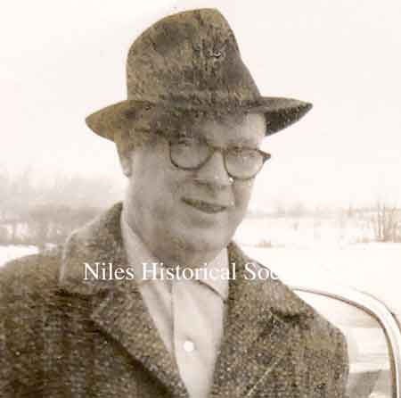
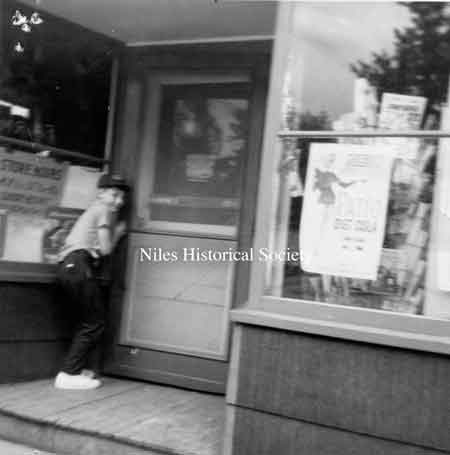
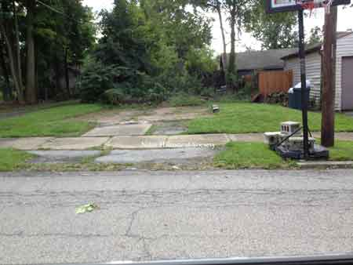
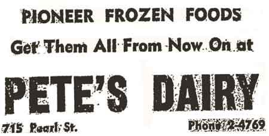
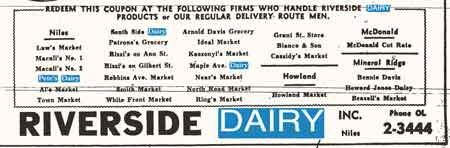

| 
(Pete) George Harold McMurray.

Gary Mercer by the front
door
of Pete’s Dairy, 1962.
 Pete’s
Dairy is no longer, only the lot remains by the alleyway that
separates Lincoln and Washinton Avenues on Pearl Street.
Gone are the kids from the neighborhood that
would sit on the curb in front of the store slurping on their
dripping popsicles on a hot summer day.
Below are sample advertisements:


|
Pete’s
Dairy
Information: Jay McMurray
There are so many great memories growing up in
Niles as a ‘Baby Boomer’ but the neighborhood store
stands out the most. Each neighborhood had a little store where
your mother would send you to pick up a loaf of bread, sandwich
meat, or some treat for your school lunch like Twinkies or Hostess
cupcakes filled with crème and topped with chocolate fudge
frosting.
Joan Miles, “We lived on the corner of Lafayette
and Hughes. There were several of those ‘Mom and Pop’
stores in our neighborhood. I remember McAllister’s on Vienna
Avenue, Cartwright’s by the old Lincoln School, and Smith’s
was another small store by Lincoln School.” Elizabeth
Bridgen, “I lived on Southside and there was a store
just like Pete’s Dairy called Partridges and I worked there
every evening from 5-9 p.m. and 8-4 on Saturday. I was the only
one working evenings, lock up and walk home around the corner.
No fear. Those were the days. Fun!”
Pete’s Dairy was located on Pearl Street between Lincoln
and Washington Avenues with an alley on the left side of the store.
The outside was brown fiber shingles with a front entrance of
a single door. Joe Dugan remembers, “Back in the
day we walked to Pete’s on our lunch break from Washington
Jr. High. Our nutritious lunch consisted of a cupcake, bag of
chips and a soda for a whopping 35 cents total-sweet memories”.
“(Pete) George Harold McMurray Born July 1, 1916 Niles Ohio
on Bentley Avenue. Pete grew up on Bentley Avenue, moved to Washington
Avenue, then to Lincoln Avenue, then to Bentley and in 1955 back
to 723 Lincoln Avenue. He married Catherine Bott from
Youngstown, Ohio on April 25th 1947. They had two daughters,
Janice C and Judy C, and one son Jay C.
Dad had one brother, Carson, and one sister, Margaret.
Carson had polio and never married. He passed away in 1946. Margaret
married William Roemer and lived on Robbins Avenue near
the Presbyterian church. Pete was in the Army during WWII serving
as an MP in France and England.
Mom worked as a nurse at Northside Hospital until 1962 when Niles
City Schools hired her as school nurse where she worked until
1986. After she retired, Mom and Dad moved to Florida where they
enjoyed riding their bikes and walking along the trail bordering
the nature preserve behind their townhouse. Dad passed away in
August 2006 and is buried in Arlington National Cemetery. Mom
is still very much alive and in great mental shape today at 100
years old. Editor: Catherine McMurray passed in late 2020 after
reaching 100 years of age.
I believe the store was built in 1946 by Dad from his father’s
garage. Carrie McMurray, my dad’s aunt, worked
at the store some, as did John Roemer. Dad’s two
employees were Hilda Nixon and Edna Sexton.
Through the years all of us worked some at the store and to a
lesser degree I did also but I was only 12 or 13 when the store
was sold in 1968.
The store was a dairy delicatessen and had everything a neighborhood
store would have back then from magazines to cigarettes, beer,
fresh milk products, and fresh eggs that he would get from a lady
on a farm past 422 on 46. In the early days the store had a lunch
counter where he served ice cream and more, in later years that
was done away with. The store was known for its penny candy by
all the local kids. The business ran as a cash business with a
tab kept for local return customers.”
The reward for helping your Mom was when she gave you a quarter
for bread and you got to spend the change on penny candy.
Michele Bloom recalls, “Loved Pete’s Dairy, back
in the day I grew up on Lincoln and Pete moved in across the street
from us. The McMurrays were such nice people. I loved walking
down the alley behind our house, it led directly to Pete’s.
The penny candy counter was so intriguing, Tootsie Rolls, Mary
Jane’s, Double Bubble Gum, so many choices. We loved the
‘pop’ bottles in the cooler chest and the miniature
wax ones at the candy counter. We would often buy ‘rolls
of caps’and set them off with stones. Ah, the good old days!”
To bolster your bankroll, you searched for discarded glass pop
bottles in your neighborhood; the small bottles were worth two
cents and the large glass quart bottles earned you a nickel. By
far the best memory from the hot summer days was the pop chest
with its ice cold water circulating around the glass bottles hiding
a multitude of flavors awaiting your hot hands and arms. There
was more than Coca-Cola in this treasure chest: Golden Age, Nehi,
Seven-Up, Hires Root beer were the bottlers that produced, Orange,
Strawberry, Cherry, Black Cherry, and Grape sodas as well as some
exotic flavors like Grapefruit and Chocolate pop.
A variety of fudgesicles, ice cream drumsticks encrusted with
nuts on the top, creamsicles, and popsicles were available if
you dared the freezing cold of the top lidded freezer as you searched
quickly before your arm turned cold. A favorite popsicle was the
red apple flavor which was guaranteed to turn your tongue and
lips the brightest red possible.
Dennis Quilty said, “When I think of Pete’s
Dairy I think of all the great candy and bags and bags of beans
for my bean shooter.”
It was a safer era in the 50s and 60s when you could walk from
your house to the store without your mom worrying that something
would happen to you.
— Memories: Ralph Tolbert |


{kind=link}
{kind=link}
{kind=link}
{kind=link}
{kind=link}
{kind=link}
{kind=link}
{kind=link}